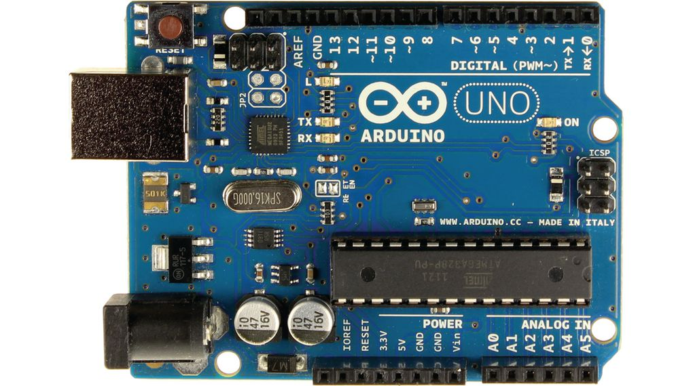

Moja Strona


| Arduino | opis | zdjęcie |
|---|---|---|
| Arduino Uno | wersja z programowalnym interfejsem USB i układem Atmega328 |  |
| Arduino Leonardo | wersja z układem ATmega32u4, który jest sercem Arduino i odpowiada za komunikację USB | |
| Arduino Mini | miniaturowa wersja Arduino wykorzystująca montowany powierzchniowo układ ATmega168 lub Atmega328 |  |
| Arduino Nano | jeszcze mniejsza wersja Arduino, zasilana przez USB zaopatrzona w montowany powierzchniowo układ ATmega168 |  |